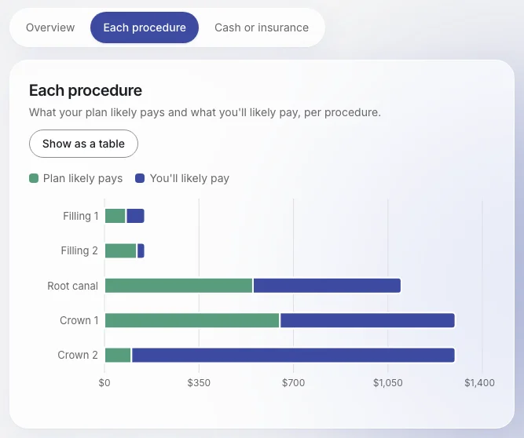

01 — Problem
Saying yes without knowing the cost
A dentist recommends a root canal, two crowns and two fillings, and the patient has to decide on the spot. What they’ll pay depends on how the deductible, coverage percentages and yearly maximum stack up, and that math is buried in dense plan documents.
My job was the moment after the math: presenting the result so someone can understand it at a glance, compare their options fairly and not lose unused benefits.
Who it’s for
Employees with dental benefits, at the moment their dentist recommends treatment.
02 — What I built
My contribution
My work
- Results summary: totals, the plan’s share versus yours, annual-maximum usage, a per-procedure chart with a table view, and a cash-versus-insurance tab
- Cash-versus-insurance calculation on the backend, written test-first
- Plan comparison: prices your care under each plan option side by side, including the API endpoint, the calculation and the React component
- Reset reminder: “before your plan resets” builds a calendar file with an alert, in the browser
- Navigation: summary tabs and a sticky Back/Next bar, so step navigation never scrolls away
- Read-aloud clean-up: stripping Markdown from summaries so the voice doesn’t speak symbols
- Documentation: the project README, rewritten for non-technical readers
03 — On screen
The results summary


Screenshots from a local run using the app’s built-in demo patient and demo plan. The amounts are demo data, not a real claim.
04 — How it works
How plan comparison prices each option
- Load optionsBackendThe endpoint takes the user’s procedures and the available plan options, including the current plan.
- Price each planBackendRuns the cost calculation for every option, with premiums in integer cents.
- Align plan yearsBackendEvery option is priced over the same number of plan years, so totals compare like with like.
- SortBackendOptions are ordered by likely total. None is labelled “best”.
- Show side by sideFrontendA React component lays the options out next to each other.
The summary cards follow the same rule: they read the calculated result directly and display it, so every number on screen traces back to tested backend code.
05 — Decisions
Choices and their trade-offs
Compare plans, never recommend one
Plan options are sorted by likely total, but the screen doesn’t pick a winner.
Trade-off: a less decisive screen. In exchange, it never gives coverage advice it can’t stand behind, especially while the plan options are demo data.
Show the assumptions behind “cash or insurance?”
When premiums are known, they’re counted for each plan year used; when they aren’t, the result says so instead of quietly leaving them out. If the two totals are within 5% of each other, the result reads “about equal” rather than implying false precision.
Tests first for anything that produces a number
I wrote the tests for cash versus insurance and plan comparison before the code, pinned to the demo patient’s known totals, so later changes couldn’t quietly shift the figures.
06 — The hard part
Making a plan comparison fair
- Problem
- The cheapest schedule for one plan can move some care into the next plan year. Compare that two-year total with another plan’s one-year total, and the comparison is lopsided: one side pays an extra year of premiums the other doesn’t show.
- Fix
- Every plan option is priced over the same number of plan years: two if any option’s best schedule moves care, otherwise one. Premiums are included for each year counted.
- Result
- The comparison is apples to apples, and tests check that the demo patient’s known totals ($1,975 with the best timing, $2,500 without) still hold for the current plan.
07 — Testing
How I checked my part
Backend tests
I wrote 67 backend test cases, covering plan comparison, the summary and cash-versus-insurance math, and text clean-up for speech. All 67 pass.
Accessibility
The per-procedure chart has a table view, so the same numbers are available without reading a chart. The Back and Next buttons stay on screen, so nobody has to scroll to move between steps.
Privacy
The reset reminder’s calendar file is generated in the browser, so no reminder data is sent to a server.
08 — Results
What shipped, and its limits
The results summary, plan comparison and reset reminder all work in the finished app, as shown in the screenshots above.
Known limitations
- The plan options and their premiums are demo values, labelled “(demo)” on screen
- The cash comparison uses one typical fee per procedure for the demo, not a dentist’s actual cash price
- Everything shown is an estimate, not medical or coverage advice
What it would need next
- Real plan options and premiums in place of the demo plans
- Actual cash prices from the dentist, where available